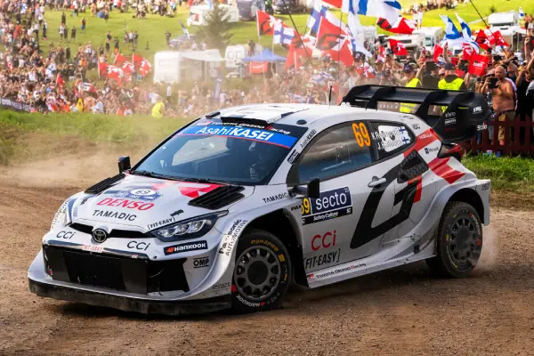
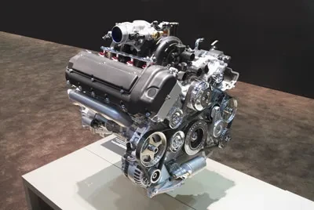
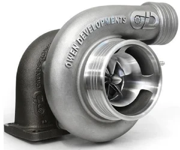
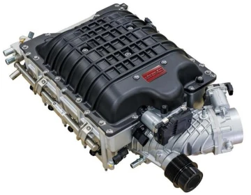
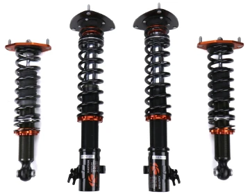
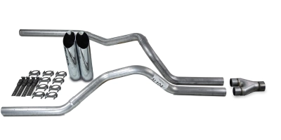
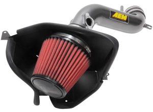
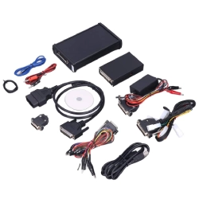
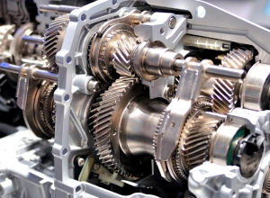
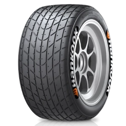

Welcome to My Car World!
Welcome to my website, a place where we celebrate everything fun about cars! Whether it's the roar of the engine the sleek design, or the thrill of speed, there's something magical about cars that captures the imagination. Personally, I love the car culture, the engineering marvels, the power, and the events like Formula 1, World Rally Championship, and drifting competitions. Even though I'm still learning, I find every part of the car world exciting, from tuning to racing, and from classic models to modern supercars.
Types of car races and why are they so popular?
Car racing is one of the most thrilling sports in the world. Here are some of the most popular types:
Formula 1: often called F1, is the pinnacle of motorsport, a global racing championship where the fastest drivers in the world compete in cutting-edge cars built by elite teams. It’s not just about speed; it’s a mix of intense competition, advanced engineering, strategic thinking, and international spectacle. Each season features a series of races called Grands Prix, held on circuits across the globe, from city streets to historic tracks. Drivers battle for points to win the World Championship, while teams compete for the Constructors’ title. F1 is where technology meets adrenaline, and every race is a blend of drama, precision, and passion. [F1]
Rally Racing: Rally racing is a motorsport where drivers and co-drivers compete to complete a series of special stages on a predetermined course, which can be public roads, forest tracks, or other off-road terrains, in the fastest time. It is a team sport that relies on a co-driver's navigation skills, as well as the driver's ability to handle various surfaces and conditions while being fast and resilient. [Wiki]
NASCAR: NASCAR is the National Association for Stock Car Auto Racing, a US-based company that sanctions and operates stock car racing events. It is one of the world's top motorsports and largest spectator sports, known for its high-speed races on oval tracks, road courses, and street circuits across the country and internationally. [Wiki]
Street racing: Street racing is the illegal, high-speed competition of vehicles on public roads, rather than on a designated race track. It involves one or more vehicles competing in an attempt to outdistance others, often organized informally in deserted areas or popular gathering spots. This practice is dangerous due to the lack of safety precautions and can result in severe penalties.
Why are they fun? The adrenaline, the competition, the engineering, and the community make racing a global phenomenon.
Car brands and their most iconic cars
There is no exact number for car brands because the industry is constantly changing, with new brands emerging and old ones disappearing or merging. However there are over 100 major brands operating globally. Some of the most popular include:
Toyota Supra mk4
Toyota ->known for producing reliable, high-quality, and durable vehicles that hold their value well.
Volkswagen Golf GTI
Volkswagen ->known for its German engineering excellence, iconic models like the Beetle and Golf, and a reputation for quality and reliability.
Hyundai i30N
Hyundai ->offering a wide range of vehicles with a strong reputation for quality, reliability, and standard features at an accessible price point.
Honda Integra GSR
Honda ->known for producing reliable, durable, and fuel-efficient vehicles across a wide range of models. It is also recognized for its high-performing engines, a history of successful motorsports and racing.
Nissan Skyline GTR R34
Nissan ->known for its innovation, reliability, and performance, and has a global reputation for producing a wide range of vehicles.

Mercedes 190 Evo
Mercedes-Benz ->known for its luxury, performance, and innovation in the automotive industry, producing a wide range of vehicles from high-end cars and vans to trucks and buses.
BMW M3 E30
BMW ->known for producing luxury vehicles and motorcycles recognized for performance, high-quality engineering, and innovative technology.
Audi Quattro
Audi ->known for its luxury, high-performance vehicles, which combine sporty design with advanced technology. The brand is particularly recognized for its Quattro all-wheel-drive system.
Ford Focus RS MK3
Ford ->known for revolutionizing mass production with the assembly line, which made the automobile accessible to the middle class, starting with the Model T.
Chevrolet Corvette C6
Chevrolet ->known for producing a wide range of affordable vehicles, including trucks and SUVs, and for iconic sports cars like the Corvette.
Some honorable mentions are Volvo, Mazda, Mitsubishi, Subaru, Skoda, Aston Martin, Saab, Alfa Romeo, Renault and more. Supercar and hypercar brands like Ferrari, Lamborghini, Mclaren, Porsche, Bugatti, Koenigsegg and Pagani.
Each brand has its own identity, history, and specialty. [Wiki]
Car tuning, what is it and why is it fun?
Car tuning is the process of modifying a vehicle to improve its performance, appearance, or handling. This can involve changes to the engine, suspension, exhaust system, electronics, and even the car’s exterior and interior design.
Types of Tuning:
Performance Tuning: Enhancing the engine’s power, acceleration, and top speed. This includes installing turbochargers, superchargers, or upgrading the ECU (Engine Control Unit).
Suspension Tuning: Adjusting the suspension for better handling, cornering, and ride comfort.
Aesthetic Tuning: Customizing the car’s look with body kits, spoilers, rims, and paint jobs.
Sound Tuning: Modifying the exhaust system to change how the car sounds – from deep growls to high-pitched roars. [Bilstein]
Why Is It Fun?
Car tuning is fun because it allows car enthusiasts to customize and improve their cars to their own tastes and needs. It is a way to express personality, improve performance, and join a community of like-minded people. It can be a creative and technical endeavor that brings satisfaction and pride when the modifications are completed.
Whether you're into speed, style, or sound, tuning is a way to make your car truly your own.
Car parts explained and what makes a car perform better?
Cars are complex machines made up of thousands of parts working together. Here, we’ll break down some of the most important components, especially those that affect performance, speed, handling, and sound.
Engine
Hjarta bílsins. Hún breytir eldsneyti í vélræna orku til að knýja bílinn áfram.
4-Cylinder Engine: Smaller, lighter, and more fuel-efficient. Common in compact cars. Less power but better economy.
6-Cylinder (V6): A balance between power and efficiency. Found in many sports sedans and SUVs.
8-Cylinder (V8): More power and torque, often used in muscle cars and trucks.
12-Cylinder (V12): High-performance engines found in supercars. Very smooth and powerful, but heavy and fuel-hungry.
Turbocharger
A turbo uses exhaust gases to spin a turbine, which forces more air into the engine. More air = more fuel = more power.
Pros: Increases horsepower without increasing engine size.
Cons: Turbo lag (delay in power), more heat, and maintenance.
Supercharger
Similar to a turbo, but powered by the engine’s crankshaft instead of exhaust gases. It provides instant power.
Pros: No lag, immediate throttle response.
Cons: Can reduce fuel efficiency and put more strain on the engine.
Suspension System
Includes springs, shock absorbers, and linkages. It keeps the car stable and comfortable.
Performance Suspension: Stiffer springs and shocks improve handling and cornering.
Lowered Suspension: Lowers the car’s center of gravity for better aerodynamics and grip.
Exhaust System
Directs gases away from the engine and can reduce noise.
Performance Exhaust: Better airflow, less resistance and better sound.
Sound dampening system: Reduces noise, better for city driving
Cold Air Intake
Replaces the stock air intake with a system that brings in cooler, denser air.
Benefit: Colder air = better combustion = more power and better efficiency.
Pros: Colder air is denser, which improves engine performance.
Cons: Can be louder and draw in water during rain.
ECU Tuning (Engine Control Unit)
The ECU controls fuel injection, ignition timing, and more. Tuning it can unlock more power or improve fuel economy.
Custom Tunes: Adjust the car’s behavior for racing, fuel saving, or better throttle response.
Brakes

Essential for safety and performance.
Performance Brakes: Larger discs and better pads improve stopping power and reduce brake fade during high-speed driving.
Transmission
Transfers power from the engine to the wheels.
Manual vs. Automatic: Manual gives more control; automatic is easier to use.
Dual-Clutch Transmissions (DCT): Offer lightning-fast gear changes, great for performance driving.
Tires
The only part of the car that touches the road.
Performance Tires: Better grip, handling, and braking, especially in dry conditions.
All-Season Tires: Balanced for various weather but not specialized.
Why does it matter?
Understanding these parts helps you make better decisions when buying, maintaining, or modifying a car. Whether you're into speed, comfort, or style, knowing how your car works makes the experience more enjoyable and personal.
The dangers of tuning and racing
Car tuning and racing can be exciting, but they come with real risks.
- Tuning Risks:
-
Improper tuning can damage the engine, brakes, or suspension.
It may void your warranty and increase insurance costs.
Some modifications are illegal and can lead to fines or failed inspections.
- Racing Risks:
-
Street racing is illegal and dangerous
It can cause serious accidents, injuries, or even death.
Legal consequences include fines, license suspension, or vehicle impoundment
It is important to be aware of these risks and make informed decisions. If you decide to participate in stunts or racing, do so in a safe and legal manner, such as on approved tracks or events.